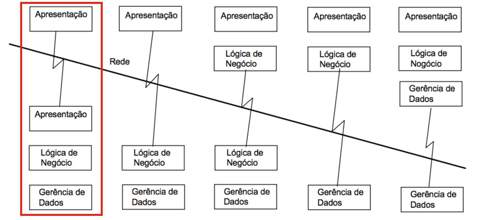
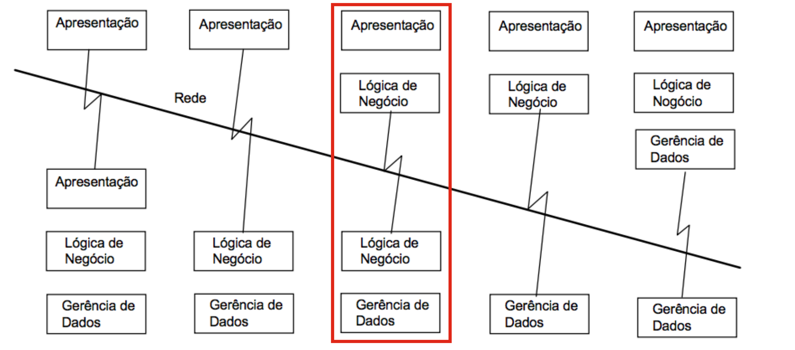

AngularJS
Um pouco de história antes...
Javascript
1995
Brendan Eich
XMLHttpRequest
1999
Internet Explorer 5
JSON (Javascript Object Notation)
2001
Douglas Crockford
AJAX
2005
Google Maps
jQuery
2006
John Resig
NodeJS (v8)
2009
Ryan Dahl
Arquitetura Cliente/Servidor
Antes do Angular
 Apresentação DistribuídaCom o Angular
 Lógica DistribuídaVamos falar de coisa boa, vamos falar de
AngularJS
O que é AngularJS?
Framework open-source criado em 2010 por Miško Hevery e mantido atualmente pela Google. Com o AngularJS, o programador tem o poder de criar uma Arquitetura MVW* e seus próprios elementos HTML.
MVW* = Model-View-Whatever
Características Principais
- Single Page Application
- Modularização da Aplicação
- Two Way Data-Binding
- Directives
- Suporte a testes Unitários
Single Page Application
São aplicações completas criadas no lado do cliente, sem renderização de conteúdo no servidor.
Modularização
Module
angular.module('app.sample', [])
.controller('SampleController', function($scope, SampleService){
//...
})
.service('SampleService', function($http){
//...
}) Agrupamento de Funcionalidades Similares
Controller
angular.module('app.sample', [])
.controller('SampleController', function($scope, SampleService){
$scope.clickSave = function(user){
SampleService.saveUser(user);
}
$scope.clickDelete = function(user){
SampleService.deleteUser(user);
}
})
Faz a comunicação da Visão com o Service
Service
angular.module('app.sample', [])
.service('SampleService', function($http){
this.saveUser = function(user){
//...
return $http.post(user)
.then(function(data){
return data.data;
})
}
this.deleteUser = function(user){
//...
return $http.post(user)
.then(function(data){
return data.data;
})
}
})
Responsável pela regra de negócio e comunicação com o server
Two Way Data-binding
Two Way Data-binding
Bind em frameworks convencionais: Acontece apenas em uma direção e quando ocorre a atualização na View não se reflete no Model.
Bind com Angular: Acontece em ambas direções e qualquer atualização na View é refletida no Model e vice-versa.
Two Way Data-binding
Olá, {{nome}}!
Diretivas
Diretiva
Diretivas são marcações no HTML feitas por meio de Elementos, Atributos e Classes CSS.
O Angular já possui um conjunto de diretivas, como ngModel, ngClass, ngStyle e ngRepeat
Também é possível criar suas próprias diretivas, facilitando o reuso de componentes no sistema
Diretiva
angular.module('app.sample', [])
var myModule = angular.module(...);
myModule.directive('minhaDiretiva', function factory(injectables) {
var directiveDefinitionObject = {
priority: 0,
template: ''
// or
// templateUrl: 'directive.html'
restrict: 'A', //E,C
scope: false,
require: ['^form','ngModel']
compile: function compile(tElement, tAttrs, transclude) {},
link: function postLink( ... ) { ... }
};
return directiveDefinitionObject;
});
Suporte a Testes Unitários

Karma Test Runner
Ambiente de execução de testes criado pelo time do Angular
É agnóstico de frameworks e Open Source.

Jasmine
Framework de Testes
Behavior-Driven Development(Orientado a comportamento).
Exemplo de código de teste
describe('Testing Sample', function(){
var age = 20;
describe('Testing variable x', function(){
it('Should be greater than 05', function(){
expect(age).toBeGreaterThan(18);
})
it('Should be less than 25', function(){
expect(age).toBeLessThan(25);
})
it('Should be equal to 20', function(){
expect(x).toEqual(20);
})
})
})